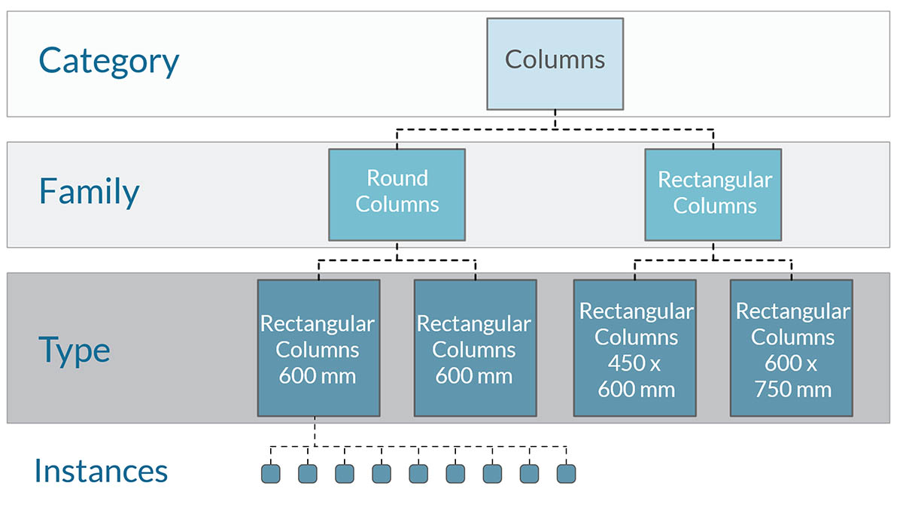
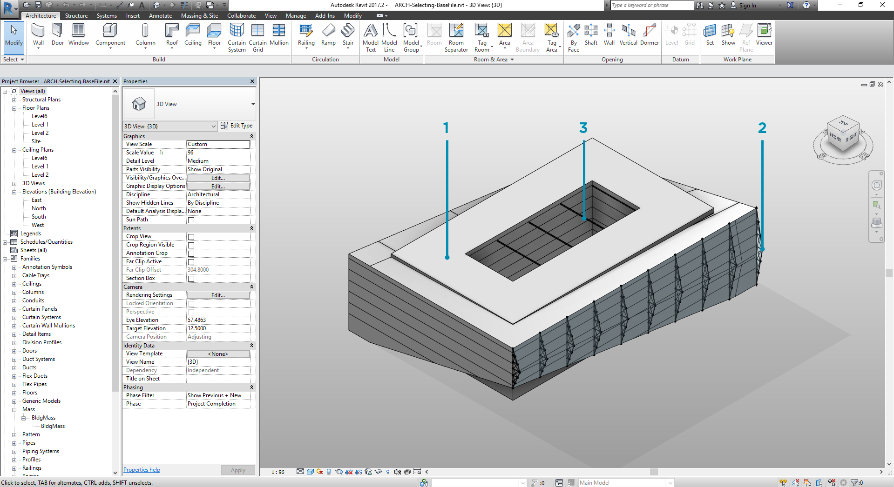
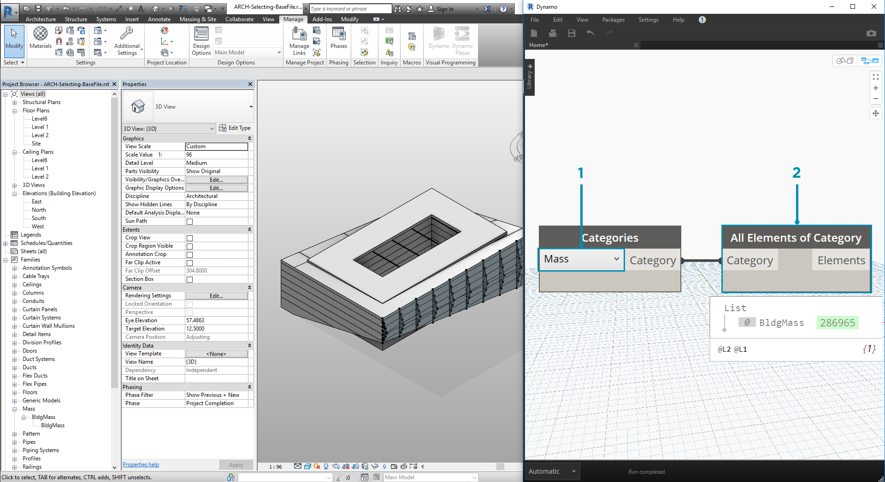
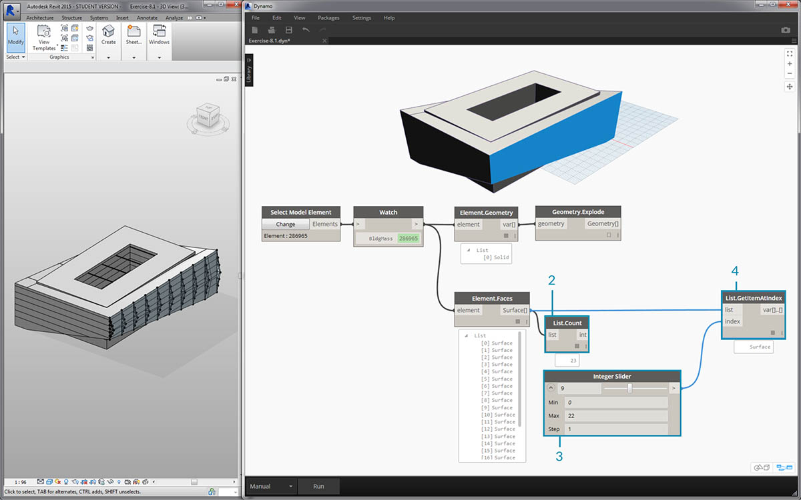
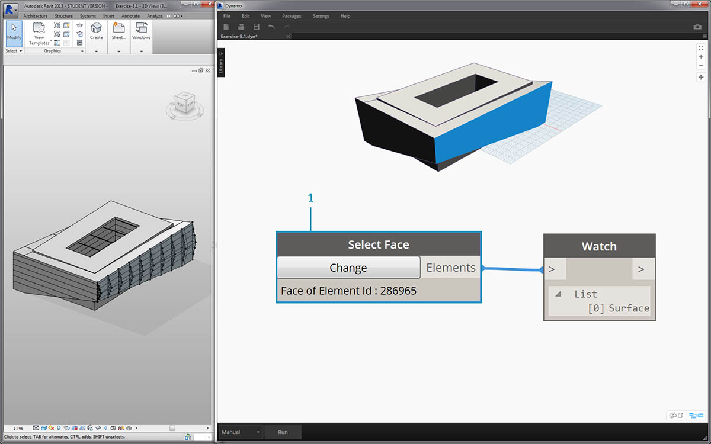
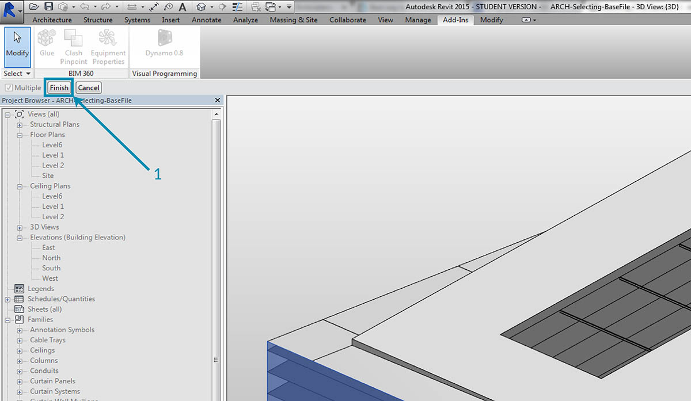
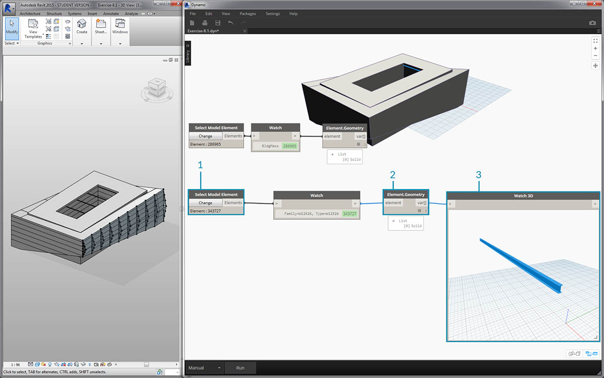
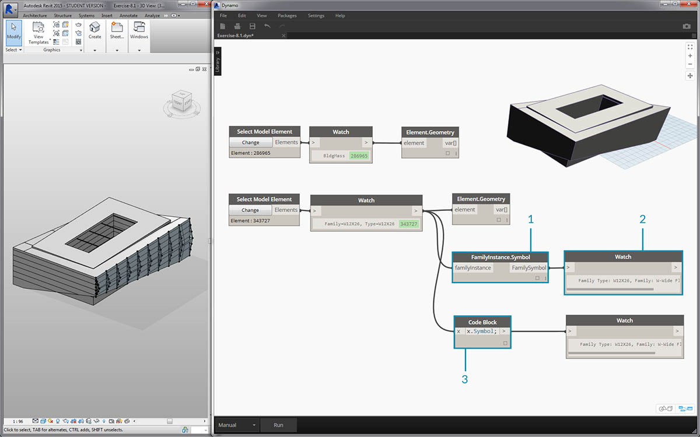
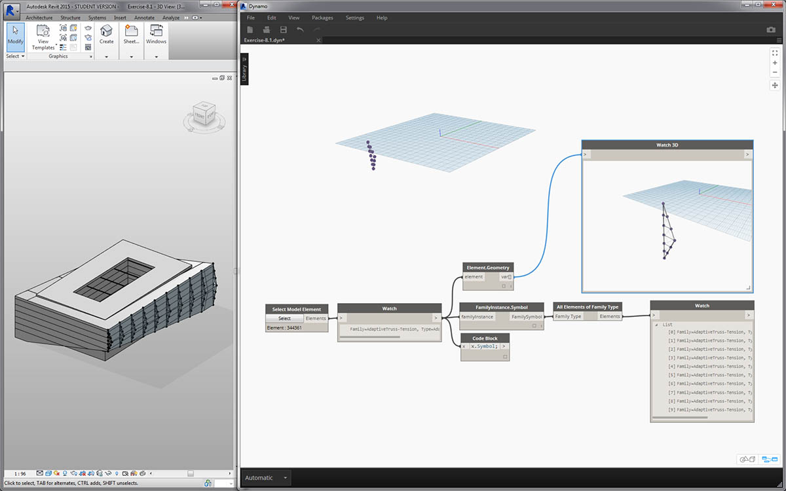
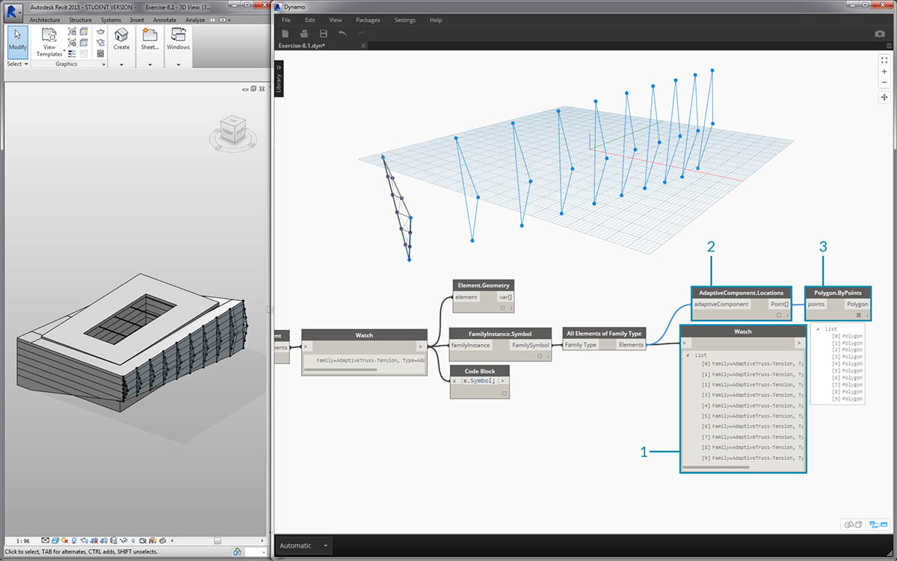

選取
Revit 是資料豐富的環境。它能為我們提供許多選取功能，而不僅僅是「點選」。我們可以查詢 Revit 資料庫，並將 Revit 元素動態連結至 Dynamo 幾何圖形，同時執行參數式作業。

使用者介面中的 Revit 資源庫提供「Selection」品類，藉此可採用許多方式選取幾何圖形。
若要正確選取 Revit 元素，請務必全面理解 Revit 元素階層。要選取專案中所有的牆嗎？依品類選取。要選取中世紀現代大廳中的每把 Eames 椅子嗎？依族群選取。在跳至練習之前，我們先快速檢閱 Revit 階層。
Revit 階層

記得生物學的分類法嗎？界、門、綱、目、科、屬、種？Revit 元素的分類方式與此類似。在基本層級，可將 Revit 階層分為不同的品類、族群、類型*及例證。例證是個別模型元素 (具有唯一的 ID)，而品類可定義一般群組 (例如「牆」或「地板」)。以此方式組織 Revit 資料庫後，我們可以選取一個元素，然後根據階層中的指定層級選擇所有類似元素。
*注意：Revit 中類型的定義與程式設計中的類型不同。在 Revit 中，類型是指階層的分支，而非「資料類型」。
使用 Dynamo 節點進行資料庫導覽
以下三個影像分別展示了 Dynamo 中 Revit 元素選取的主要品類。這些是搭配使用的強大工具，我們將在後續練習中探究其中一些工具。

點選是直接選取 Revit 元素最簡單的方式。您可以選取完整的模型元素，也可以選取其拓樸的一部分 (例如一個面或一條邊)。這會與該 Revit 物件保持動態連結，因此在 Revit 檔案更新其位置或參數時，參考的 Dynamo 元素在圖表中也將更新。

下拉式功能表會建立 Revit 專案中所有可存取元素的清單。您可以使用下拉式功能表參考視圖中不一定可見的 Revit 元素。這是非常強大的工具，可用於在 Revit 專案或族群編輯器中查詢既有元素或建立新元素。

您也可以依 Revit 階層中的特定層選取 Revit 元素。這是功能強大的選項，可用於自訂大型資料陣列，以便為記錄或生產例證化及自訂做好準備。
記住以上三個影像，接下來深入研習練習，練習會選取基本 Revit 專案中的元素，以便為我們將在本章的其餘各節建立的參數式應用程式做好準備。
練習
下載此練習隨附的範例檔案 (按一下右鍵，然後按一下「連結另存為...」)。附錄中提供範例檔案的完整清單。

在此範例 Revit 檔案中，包含簡單建築的三種元素類型。我們將以此為例，瞭解在 Revit 階層的環境中選取 Revit 元素：
- 建築量體
- 桁架 (自適應元件)
- 樑 (結構框架)

根據 Revit 專案視圖中目前存在的元素，我們可以做出哪些結論？若要選取適當的元素，我們需要在階層中下移多遠？處理大型專案時，這無疑會變為更複雜的工作。提供許多選項：我們可以依品類、層級、族群、例證等選取元素。
- 由於我們使用基本設置，因此接下來選擇「Categories」下拉式節點中的「Mass」以選取建築量體。該選項位於 Revit > Selection 頁籤中。
- 「Mass」品類的輸出是品類自身。我們需要選取元素。為了執行此作業，我們使用 All Elements of Category節點。
此時請注意，我們在 Dynamo 中看不到任何幾何圖形。我們已選取 Revit 元素，但尚未將該元素轉換為 Dynamo 幾何圖形。這是重要的區分。若您選取大量元素，不會希望在 Dynamo 中預覽所有這些元素，因為這會拖慢所有作業的速度。Dynamo 是無需執行幾何圖形作業即可對 Revit 專案進行管理的工具，我們將在本章的下一節瞭解該功能。
在此案例中，我們將使用簡單的幾何圖形，因此希望將幾何圖形引入 Dynamo 預覽。以上觀看節點中的「BldgMass」旁有綠色的數字*。這表示元素的 ID，並表明我們處理的是 Revit 元素，而不是 Dynamo 幾何圖形。下一步是將此 Revit 元素轉換為 Dynamo 中的幾何圖形。

- 我們使用 Element.Faces 節點，取得表示 Revit 量體每個面之曲面的清單。我們現在可以在 Dynamo 視埠中看到幾何圖形，可以開始參考用於參數式作業的面。

以下是替代方法。在此案例中，我們不是透過 Revit 階層進行選取 (「All Elements of Category」)，而是選擇在 Revit 中明確選取幾何圖形。
- 使用「Select Model Element」節點，按一下「select」 (或「change」) 按鈕。在 Revit 視埠中，選取所需的元素。在此案例中，我們將選取建築量體，
- 我們可以使用 Element.Geometry 選取完整量體作為一個實體幾何圖形，而非 Element.Faces。這會選取量體內包含的所有幾何圖形。
- 我們可以使用 Geometry.Explode 取得曲面清單。這兩個節點的工作方式與 Element.Faces 相同，但是提供其他選項用於探究 Revit 元素的幾何圖形。

- 使用一些基本清單作業，我們可以查詢感興趣的面。
- 首先，List.Count 節點展示出我們正在處理量體中的 23 個曲面。
- 參考此數量，我們將 integer slider 的最大值變更為「22」。
- 使用 List.GetItemAtIndex，我們輸入清單與 integer slider 以提供 index。採用所選值進行滑動時，若到達 index 9 並已隔離對桁架提供支撐的主要正面，作業就會停止。

- 上一個步驟稍顯繁瑣。使用「Select Face」節點可以更快執行此作業。藉此可以隔離 Revit 專案中並非元素本身的面。套用與「Select Model Element」相同的互動，只是我們選取曲面，而不是完整的元素。

假設我們要隔離建築的主要正面牆。我們可以使用「Select Faces」節點執行此作業。按一下「Select」按鈕，然後在 Revit 中選取四個主要正面。

- 在 Revit 中選取四面牆後，確保按一下「Finish」按鈕。

- 現在，這些面已作為曲面匯入至 Dynamo。

- 現在，我們看看中庭上方的樑。使用「Select Model Element」節點，選取其中一根樑。
- 將樑元素插入至 Element.Geometry 節點，現在可在 Dynamo 視埠中看到樑。
- 可以使用 Watch3D 節點拉近幾何圖形 (若未在 Watch3D 中看到樑，請按一下右鍵，然後按一下「zoom to fit」)。

Revit/Dynamo 工作流程中可能經常會遇到以下問題：如何選取一個元素並取得所有類似元素？由於選取的 Revit 元素包含其所有階層資訊，因此我們可以查詢其族群類型，並選取該類型的所有元素。
- 將樑元素插入至 FamilyInstance.Symbol* 節點。
- Watch 節點顯示現在輸出是族群符號，而不是 Revit 元素。
- FamilyInstance.Symbol 是簡單的查詢，因此我們在代碼區塊執行此作業可以像使用
x.Symbol;時一樣輕鬆，並會取得相同結果。
*注意：族群符號是族群類型的 Revit API 術語。由於這可能會導致某些混淆，因此在未來版本中將對其進行更新。

- 為了選取其餘的樑，我們使用「All Elements of Family Type」節點。
- Watch 節點顯示我們已選取五個 Revit 元素。

- 我們也可以將所有這五個元素轉換為 Dynamo 幾何圖形。
如果有 500 根樑會怎樣呢？將所有這些元素轉換為 Dynamo 幾何圖形會非常慢。若 Dynamo 花費很長時間來計算節點，您可能要在開發圖表時，使用「freeze」節點功能以暫停所執行的 Revit 作業。若要取得有關凍結節點的更多資訊，請參閱「實體」一章中的「凍結」一節。
在案例中，如果我們將匯入 500 根樑，是否需要所有曲面都執行所需的參數式作業？或者，我們能否萃取樑的基本資訊，並使用基本幾何圖形執行生產工作？我們在瞭解本章內容時，需要記住這個問題。例如，我們看看桁架系統：

使用相同的節點圖表，選取桁架元素而不是樑元素。執行此作業之前，刪除上一步驟中的 Element.Geometry。

- 在 Watch 節點中，可以看到我們從 Revit 中所選自適應元件的清單。我們希望萃取基本資訊，因此從自適應點開始。
- 將「All Elements of Family Type」節點插入至「AdaptiveComponent.Location」節點。這將產生清單的清單，其中每個清單都包含三點，表示自適應點的位置。
- 連接「Polygon.ByPoints」節點將傳回 polycurve。我們可以在 Dynamo 視埠中看到它。透過此方法，我們已視覺化一個元素的幾何圖形，並提取了其餘一系列元素 (數量可能多於此範例) 的幾何圖形。
*秘訣：若在 Dynamo 中按一下 Revit 元素的綠色數字，Revit 視埠將縮放至該元素。